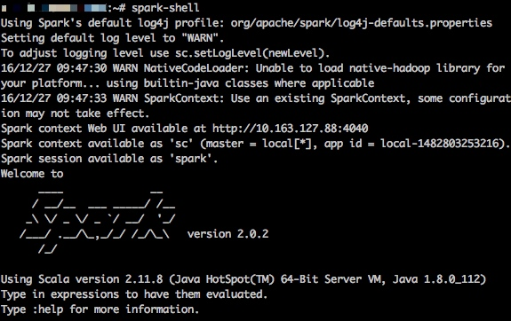

Ubuntu 14.04 Spark单机环境搭建与初步学习
最近课设需要学习，预先学习了一波。
注意：本文首次撰写于2016-12-27，最近修改时间为2016-12-27，请注意相关程序的可用性与安全性。
安装与配置
大数据这个领域是热火朝天，而Apache Spark则是一个炙手可热大数据神器。趁着现在还比较有空，赶紧学习Spark方面的东西。
这一小节主要是记录下在Ubuntu 14.04下搭建Spark单机环境的过程1。这个过程主要有四个部分：
- 安装Java
- 安装Scala
- 安装Spark
- 安装sbt
安装Java
下载Java SE，然后解压
# wget http://download.oracle.com/otn-pub/java/jdk/8u112-b15/jdk-8u112-linux-x64.tar.gz?AuthParam=1482801228_c2a115fb9b0cbc9f160e02b5c29212c7 # mv jdk-8u112-linux-x64.tar.gz\?AuthParam\=1482801228_c2a115fb9b0cbc9f160e02b5c29212c7 jdk-8u112-linux-x64.tar.gz # tar -zxvf jdk-8u112-linux-x64.tar.gz -C /opt/这里需要解释下为什么这么做：因为我直接从Java官网上下载的，而官网下载之前需要确认协议，如果直接复制官网下载地址则会出现下载的是个网页的情况。所以只能通过一个带有AuthParam序号的下载地址下载后再修改文件名了。如果有更好的方法的朋友，请联系我告知。谢谢！2016-12-27 12:05:05
配置环境变量
Ubuntu的环境变量又好几个地方可以配置，我这里配置的是
/etc/profile文件。export JAVA_HOME=/opt/jdk1.8.0_112 export JRE_HOME=${JAVA_HOME}/jre export CLASSPATH=.:${JAVA_HOME}/lib:${JRE_HOME}/lib export PATH=${JAVA_HOME}/bin:${JRE_HOME}/bin:$PATH之后重启服务器，或者输入
source /etc/profile命令，使环境变量生效，检验Java有没配置成功$ java -version java version "1.8.0_60" Java(TM) SE Runtime Environment (build 1.8.0_60-b27) Java HotSpot(TM) 64-Bit Server VM (build 25.60-b23, mixed mode) $ javac -version javac 1.8.0_60
安装Scala
Scala安装过程和Java的类似，比较简单
官网下载压缩包，然后解压
# mkdir /opt/scala # wget http://downloads.lightbend.com/scala/2.12.1/scala-2.12.1.tgz # tar -zxvf scala-2.12.1.tgz -C /opt/scala/配置环境变量
/etc/profileexport SCALA_HOME=/opt/scala/scala-2.12.1 export PATH=${SCALA_HOME}/bin:$PATH重启服务器，或者输入
source /etc/profile命令，使环境变量生效，测试一下# scala -version Scala code runner version 2.11.7 -- Copyright 2002-2013, LAMP/EPFL
安装Spark
官网下载压缩文件。这里我选择的是2.0.2版本的Pre-build for Hadoop2.7 and later. 解压
# mkdir /opt/spark # wget http://download.nextag.com/apache/spark/spark-2.0.2/spark-2.0.2-bin-hadoop2.7.tgz # tar -zxvf spark-2.0.2-bin-hadoop2.7.tgz -C /opt/spark/配置环境变量 /etc/profile
export SPARK_HOME=/opt/spark/spark-2.0.2-bin-hadoop2.7 export PATH=${SPARK_HOME}/bin:$PATH重启服务器，或者输入
source /etc/profile命令，使环境变量生效。到这里，应该就可以启动spark-shell，跟着Spark官网上的教程来学API了。
安装sbt
安装sbt我参考的是这篇文章ubuntu14手动安装sbt
官网下载解压
# mkdir /opt/scala/ # wget https://dl.bintray.com/sbt/native-packages/sbt/0.13.13/sbt-0.13.13.tgz # tar -zxvf sbt-0.13.13.tgz -C /opt/scala/ # cd /opt/scala/ # mv sbt-launcher-packaging-0.13.13 sbt配置环境变量
/etc/profileexport SBT_HOME=/opt/scala/sbt export PATH=${SBT_HOME}/bin:$PATH建立启动sbt的脚本
# mkdir /opt/scala/sbt/ # cd /opt/scala/sbt/ # touch sbt # 脚本内容如下，注意sbt-launch.jar的路径 SBT_OPTS="-Xms512M -Xmx1536M -Xss1M -XX:+CMSClassUnloadingEnabled -XX:MaxPermSize=256M" java $SBT_OPTS -jar /opt/scala/sbt/bin/sbt-launch.jar "$@"修改sbt文件权限
# chmod u+x sbt测试sbt
# sbt sbt-version Getting org.scala-sbt sbt 0.13.13 ... [info] Set current project to kaka (in build file:/home/kaka/) [info] 0.13.13第一次执行的时候会下载很多东西，然后因为国内你猜到的原因，这一步会比较慢，也很有可能会失败。可以通过如下步骤设置国内的sbt源 2 3：
#vim ~/.sbt/repositories在里面输入如下内容：
[repositories] local oschina:http://maven.oschina.net/content/groups/public/ oschina-ivy:http://maven.oschina.net/content/groups/public/, [organization]/[module]/(scala_[scalaVersion]/)(sbt_[sbtVersion]/)[revision]/[type]s/[artifact](-[classifier]).[ext]不过这个并没有成功，目前来看还是因为你懂得的原因，正在寻找解决方案。2016-12-27 12:34:43
到此为止，Spark的单机环境就搭建完毕，下一步就是认真地学习Spark了。
初识Spark
这一小节主要介绍下Spark相关语法与操作指南。4
Spark 终端
我觉得 Spark 非常亲民的一点是它提供了一个交互式的命令行终端，这样用户就可以快速地测试一些命令和语句，而无需每次都保存代码脚本然后调用执行，这对于 R 和 Python 用户来说是非常顺心的一件事。如果已经将 Spark 的 bin 目录加入到了系统路径，那么在系统命令行里输入 spark-shell 就可以进入 Spark 的交互式终端了。

如果出现了像图中 scala> 这样的提示符，就说明 Spark 安装成功。这里的 scala 指的是 Scala 编程语言。前面说了，Spark 主要使用 Scala 来进行开发，这意味着要最大程度地发挥 Spark 的性能，还需要再多学一门编程语言（Spark 还支持 Java 和 Python 的接口，但 Java 的语法没有 Scala 简洁，Python 的性能没有 Scala 的高）。虽然这需要花费一些额外的时间，但好在 Scala 的语法非常直观，基本上通过例子就可以模仿写出自己的程序来。
如果对 Scala 语言感兴趣，可以参考这份教程来了解其基本的语法。但在这里我们将直接进入正题，用 Spark 来跑一个回归的例子。
Spark 例子：回归模型
Spark 的数据分析功能包含在一个称为 MLlib 的组件当中，顾名思义，这是 Spark 的机器学习库，而回归是它支持的模型之一。为了演示例子，我们首先用 R 生成一组模拟的数据（是不是感觉怪怪的，主要是我还没用熟 Scala）：
set.seed(123)
n = 1e6
p = 5
x = matrix(rnorm(n * p), n)
b = rnorm(p)
y = x %*% b + rnorm(n, 1, 3)
z = data.frame(y, x)
write.table(z, "reg.txt", sep = " ", row.names = FALSE, col.names = FALSE)
我们将数据保存为 reg.txt 文件，它共有一百万行，每一行有6个数，用空格分隔，其中第一个数代表因变量，其余的为自变量。
下面就是一段用 Scala 实现的 Spark 算回归的程序，其中包括了读取数据，拟合回归，计算回归系数，进行模型预测以及计算 R2R2 的过程。将这段程序复制到 Spark 的终端里，就可以迅速查看输出结果，体验 Spark 的基本功能了。
import org.apache.spark.mllib.linalg.Vectors
import org.apache.spark.mllib.regression.LabeledPoint
import org.apache.spark.mllib.regression.LinearRegressionWithSGD
import org.apache.spark.mllib.stat.Statistics
val raw = sc.textFile("reg.txt")
val parsed = raw.map({ line =>
val split = line.split(' ') // 字符串按空格切分
val y = split(0).toDouble // 第一个数转成Double型，是因变量
val x = split.tail.map(_.toDouble) // 其余的转成自变量向量
LabeledPoint(y, Vectors.dense(x)) // 把因变量和自变量打包
}).cache()
println(parsed.count())
val model = new LinearRegressionWithSGD()
model.optimizer.setNumIterations(100)
model.setIntercept(true)
val tstart = System.currentTimeMillis()
val res = model.run(parsed)
val tend = System.currentTimeMillis()
println("Model training time: " + (tend - tstart) / 1000.0 + " secs")
println(res.intercept)
println(res.weights)
val pred = res.predict(parsed.map(_.features))
val r = Statistics.corr(pred, parsed.map(_.label))
println("R-square = " + r * r)
下面我们来解释一下程序中每一部分的含义。开头1到4行的是一系列的 import 语句，目的是使用一些已经封装好的类，与 R 中的 library() 和 Python 的 import 语句类似。另外，相信不少读者立刻就能看出这是 Java 风格的导入语句。事实上，Scala 正是基于 Java 而开发的，因此其语法也大多脱胎于 Java。
第6行是读取数据，并将结果赋值给一个变量 raw。特别需要指出的是，这条语句实际上并没有开始读取文件，而只是建立了数据与程序之间的一种连接。这一点是与 R 中 read.table() 最大的不同。
第8到第13行其实包含了两条操作，第一是调用了 raw 对象的 map() 方法，之后连着的是 cache()方法。map() 相当于 R 中的 apply()，意思是对读进来文件的每一行进行一次变换，然后将结果返回，组成一个新的向量。之所以需要这么做，是因为 Spark 读取文本文件时把每一行当作了一个字符串，因此我们需要从这个字符串中解析出我们需要的数据来。语句中被大括号包括的部分其实就是定义了这样一个变换函数，其输入是参数 line，代表传入函数的那个字符串，而输出是一个 LabeledPoint 对象，它是 MLlib 中定义的一个数据结构，用来代表一个因变量-自变量的配对观测。map() 方法返回的结果，就是一个长度为一百万，每个元素为 LabeledPoint 类型的向量。
接下来的 cache() 方法是 Spark 非常独到的一个操作，它是为了告诉 Spark，只要内存足够（限额可以通过 Spark 中的配置文件设置），就将数据放到内存里，以加快后续程序的运算速度。如果内存放不下，就依然保存到硬盘中。这样的好处在于，一方面避免了 R 把所有对象都往内存放的操作，另一方面避免了 Hadoop 这种重度依赖硬盘，以至于效率低下的情形。
而有趣的是，执行完这一句后，数据其实还没有进行真正的读取。这是因为 Spark 采用了一种“延迟运行”的机制，意思是数据只有在真正用到的地方才开始运算，其理念就是，“只要老师不检查作业，我就暂时不写”。基于这个原因，数据只有到了下面 parsed.count() 这句需要计算样本量时才真正开始进行读取和变换。
接下来的第17到26行就是真正拟合回归模型的时候了。MLlib 里拟合回归采用的是随机梯度下降法（SGD），选用这种算法的原因，一是因为它是一种迭代算法，可以通过设置迭代次数来随时终止计算（当然同时会损失一部分精度），这对于大规模的数据是非常关键的，因为通常在这些场合下我们不要求结果非常精确，但却希望计算能在规定的时间里完成。而另一个原因就在于这种算法可以比较容易地进行并行，扩展性较好。
第17行中，我们先建立模型对象，然后在19、20行设置最大迭代次数以及告诉模型应该包括截距项。22和24行插入了两句获取时间的函数，是为了评估模型训练（23行）花费的时间。
在第31行中，我们用拟合出的模型对训练集本身进行了预测。parsed.map(_.features) 的目的是取出训练集中的自变量部分，而 predict() 方法返回的结果就是因变量的预测值向量。
最后的第33行，我们利用 MLlib 为我们封装好的 corr() 函数计算了预测值与真实值之间的相关系数（parsed.map(_.label) 与 parsed.map(_.features) 相对，是取出训练集中的因变量），将它平方一下，就是模型的 R2R2 值了。
学习资源
下面几个链接我觉得对于 Spark 入门是非常有帮助的：
参考资料与文献
-
曾梦想仗剑走天涯. Ubuntu 14.04 Spark单机环境搭建[EB/OL]. http://kwangka.github.io/2015/10/15/installspark/. ↩
-
SegmentFault. 加速SBT下载依赖库的速度[EB/OL]. http://segmentfault.com/a/1190000002474507. ↩
-
sbt. Proxy Repositories[EB/OL]. http://www.scala-sbt.org/0.13/docs/Proxy-Repositories.html. ↩
-
怡然轩. 极简 Spark 入门笔记——安装和第一个回归程序[EB/OL]. http://yixuan.cos.name/cn/2015/04/spark-beginner-1/. ↩